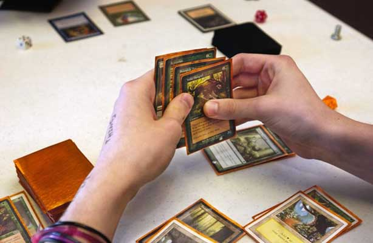

MAGIC The Gathering
O hře
V rámci hry Magic každý hráč převezme roli planeswalkera, nebo-li takzvaného sférochodce. Ten je vybaven vlatními bytostmi a kouzli, s jejich pomocí pojuje s dalšímy planeswalkery
Tato hra se běžně hraje se dvěma hráči, ale lze ji hrát i ve více. Každý hráč používá svůj vlastní balíček, který může být sestaven z karet, které vlastní, nebo z omezeného počtu karet, které jsou k dispozici na akci. Existuje několik způsobů, jak vyhrát hru, přičemž nejčastějším je redukování soupeře na 0 životů, a to z počátečních celkem 20.
V současné době existuje více než 18 000 unikátních karet Magic, ke kterým se každý rok přidávají stovky. Karty se prodávají v různých jazycích a produktech, včetně posilovacích balíčků a předkonstruovaných tematických balíčků.
Magic je hra strategická hra, kde je ale velká část informací soupeřům skryta. Naproti tomu některé další hry, například šachy, vystavují celý herní stav všem hráčům. Jsou tak nucení hádat jaké možnosti se protivníkovy skýtají, v kombinaci s náhodností ve hře (jako například z míchání), dělá hledání dokonalých nebo ideálních strategií nepraktickým, ne-li nemožným, a testuje různé kognitivní dovednosti. Toto je umocněno neustálým přidáváním nových karet, které vynucují pravidelné přehodnocování strategií stavby vlastního balíčku a vedou k neustále se měnící hře, jak se hráči přizpůsobují.
Barvy karet
Karty Magic se rozdělují na pět barev pro mechanické účely: bílá , modrá , černá , červená a zelená . Každá karta může být některá z těchto barev nebo bezbarvá . Karta může být také vícebarevná.
Každá barva má charakteristické strategie , mechaniku a filozofii. Tyto vlastnosti jsou odvozeny od běžných asociací s barvami samotnými a od praktických úvah o vytváření dobré hry
Mana systém
Mana je primární zdroj pro hraní kouzel. Mana je obvykle kreslena ze zemí (jako jsou základní pozemky roviny, ostrov, bažina, hora a les), ale může být také generována nestálými pevninami a kouzly. Hráči si vyberou libovolné karty, které chtějí. Aby to fungovalo, hra potřebuje nějaký způsob, jak vydělat co nejvíce karet. Díky tomu, že kouzla mají cenu, jsou designéři schopni vyrobit různé karty důležité v různých částech hry. Z tohoto důvodu má každá karta jiný důvod, aby mohla být zvažována pro balíček. Tato rozmanitost použití karet je klíčovým faktorem při fungování celé karetní hry.
Typy karet
V Magic je několik základních tipů karet. Každý typ karty má svá vlastní pravidla, jak se hraje. Hlavní typy karet jsou: artefakt, stvoření, kouzlo, instanty, země, planeswalker a očarovaní. Některé objekty mohou mít více než jeden typ.
{kind=link}